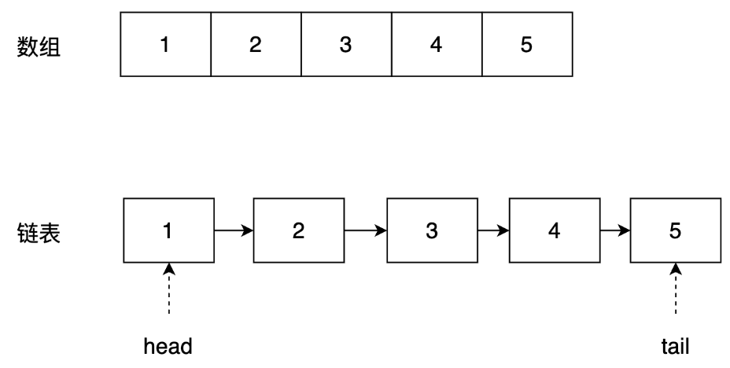

A. 在C++语言中new和malloc都是在堆（heap）上进行动态的内存操作，可以互相代替。
B. C++语言重载（over load）是指子类重新定义父类的虚函数的方法。
C. C++语言函数既可以嵌套定义又可以递归调用。
D. 在C++语言中调用函数时，只能把实参的值传给形参，形参的值不能传送给实参（不考虑引用、指针等情况）。
A，关键字new和malloc都是在堆（heap）上进行动态的内存申请，但是内存释放不同，new申请的内存用delete释放，malloc申请的内存用free释放，因此不能代替 B，子类重新定义父类的虚函数的方法 这种叫覆盖，override C，函数不能嵌套定义，也就是函数内部不能定义函数
A
面向对象的基本特性是封装，继承和多态
B
构造函数不可以是虚函数，析构函数可以是虚函数
C
子类重新定义父类虚函数的方法叫做重载
D
多态是为了接口重用，封装和继承是为了代码重用
参考答案：答案 C 子类重新定义父类虚函数的方法叫做 覆写
A
通过对象调用一虚函数
B
通过指针或引用调用一虚函数
C
通过对象调用静态函数
D
通过指针或应用调用一静态函数
动态联编(动态绑定)就是程序在运行的时候知道该调用哪个函数，而不是编译阶段，所以这个机制应该是由虚函数支持的，即运行时的多态，基类的某个成员函数声明为虚函数，派生类继承，而且同样重写该函数，那么当声明一个派生类的指针或者引用时，它所调用的函数是由该指针指向的对象确定的，这就是动态联编
char s[] = "12345", *p = s;
printf("%d\n", *(p+5));
字符’\0’的ASCII码值就是0
class Base {
char data[3];
public:
virtual void f() { cout << "Base::f" << endl; }
virtual void g() { cout << "Base::g" << endl; }
virtual void h() { cout << "Base::h" << endl; }
};
int main() {
cout << sizeof(Base)<< endl;
return 0;
}
答案：8
data[3]占3个字节，因后面有虚函数，应开辟空间存放虚函数指针，虚函数指针占4个字节，data中剩余的一个字节不够，重新开辟4字节并且data中空出一个 字节对齐 ，因此sizeof(Base) = (3 * sizeof(char) + 1(空余一个字节，进行对齐))+ 4(虚函数指针）
#include <iostream>
using namespace std;
class Base {
public:
virtual void f() {
cout << "f0+";
}
void g() {
cout << "g0+";
}
};
class Derived : public Base {
public:
void f() {
cout << "f+";
}
void g() {
cout << "g+";
}
};
int main() {
Derived d;
Base* p = &d;
p->f();
p->g();
return 0;
}
g0+：基类中g()不是虚函数，因此不是多态操作，执行的是基类的g()函数
int main() {
int a = 9;
a += a -= a + a;
printf("%d\n", a);
return 0;
}
A int
B char
C float
D long int
A
父类的构造函数与析构函数不会自动被调用
B
成员变量需要用public protected private修饰，在定义变量时不再需要var关键字
C
父类中定义的静态成员，不可以在子类中直接调用
D
包含抽象方法的类必须为抽象类，抽象类不能被实例化

数组 |
链表 |
|
|---|---|---|
| 存储方式 | 连续的内存块 | 非连续的内存块 |
| 插入操作 | 需要移动后续元素，时间复杂度 O(N) | 只需要修改前后节点的指针即可，时间复杂度 O(1) |
| 删除操作 | 需要移动后续元素，时间复杂度 O(N) | 只需要修改前后节点的指针即可，时间复杂度 O(1) |
| 随机访问 | 支持，查找时间复杂度 O(1) | 不支持，查找时间复杂度 O(N) |
| 内存占用 | 固定，需要预分配空间 | 动态，只需要使用时申请空间 |
| 适用场景 | 数据大小固定，随机访问多 | 数据大小不固定，插入、删除操作频繁的场景 |
##网络
A 物理层 B 数据链路层 C 网络层 D 运输层
A
在信道上传输原始的比特流
B
确保到达对方的各段信息正确无误
C
确定数据包从源到目的如何选择路由
D
加强物理层数据传输原始比特流的功能并进行流量控制
Ⅰ．运行路由协议，设置路由表
Ⅱ．监测到拥塞时，合理丢弃IP分组
Ⅲ．对收到的IP分组头进行差错校验，确保传输的IP分组不丢失
Ⅳ．根据收到的IP分组的目的IP地址，将其转发到合适的输出线路上
A 路由器 B 交换机 C 打印机 D 集线器
A 0.92G B 1.6G C 2.0G D 9.2G
A 将计算机连接到通信介质上
B
进行电信号匹配
C
实现数据传输
D
网络互连
网卡是工作在链路层的网络组件，是局域网中连接计算机和传输介质的接口，不仅能实现与局域网传输介质之间的物理连接和电信号匹配，还涉及帧的发送与接收、帧的封装与拆封、介质访问控制、数据的编码与解码以及数据缓存的功能等
所以网络互联的任务是网线的而不是网卡的